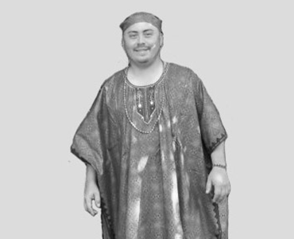

Oloye Ifanla Italeke

A los 15 años, después de haber sido iniciado en la regla de Palo Mayombe por el Tata Npungo y Ori Ate Hugo Díaz Meneses Okanla (Q.E.P.D / Ki Iba re o torun), emprendió sus viajes a Cuba en donde conoció a varios de los sacerdotes más reconocidos de la regla de Oosa, Palo Mayombe e Ifá. Después de 6 años de reflexión y estudio acerca de la cultura Yoruba descendiente comúnmente conocida bajo el término “Santería”, se decidió por el sacerdocio, y en el año 1996, fue iniciado en la regla de Oosa como Iyaworisa Omo Osoosi por el distinguido sacerdote Noelio Camejo Mantecon Oba Olufondeyii en la calle Virtudes entre Gervasio y Belascoain de ciudad de la Habana, Cuba. Desde el principio de su sacerdocio, demostró un interés extraordinario por el crecimiento y la unificación de los adoradores de los Orisa en México, por ello en virtud a su constancia en el mes de Julio del año 2003 en el marco del International Congress of Orisa Tradition and Culture – Orisa World (Congreso Internacional de la Tradición y Cultura Orisa) celebrado en el palacio de las convenciones de ciudad de la Habana, Cuba, es elegido como Delegado en México del International Congress of Orisa Tradition and Culture – Orisa World, cuyo presidente es el respetable profesor Awise Awo ni Agbaye Ogun’wande Abimbola.
El 8 de Febrero del 2004 organiza en la ciudad de México en la unidad de congresos del Centro Médico Nacional Siglo XXI con la ayuda del Ori Ate Lázaro Castillo Obanlaye y el Awo Luís Rene Teixidor Toirat Ogbe Tunmopon (Ogbe Oturupon) la primer reunión celebrada en México del International Congress of Orisa Tradition and Culture – Orisa World, con la presencia de grandes personalidades tales como:
- Awise Awo ni Agbaye Ogun’wande Abimbola – Presidente y fundador del International Congress of Orisa Tradition and Culture – Orisa World
- Aseda Awo ti ilu Osogbo Atanda Ifagbenusola – Secretario de finanzas del International Congress of Orisa Tradition and Culture – Orisa World
- IAwo John Watson Fadamilare – Vicepresidente de la región de Norteamérica del International Congress of Orisa Tradition and Culture – Orisa World.
El 17 de Marzo del mismo año es elegido como presidente y fundador de Hattaf México por el honorable sacerdote Aseda Awo ti ilu Osogbo Atanda Ifagbenusola, sin embargo, en el mismo año y por motivos de proyectos inmensamente buenos fuera de la ciudad de México, asigna la presidencia de Hattaf México al Ori Ate de la regla de Oosa Oscar Rosales (este último actualmente es Awo de Orunmila).
El 28 de Mayo del 2006 viaja a Nigeria con la intención de recibir la ceremonia de Itenifa, en dicho viaje y con la intención de apoyar la religión de Ifá en Venezuela, invita para que conociera tierras Yoruba al presidente del Egbe Orisa Oko el Awo Ifatokun y su respetable esposa.
El 1º de Abril del 2006 y después de 8 años estudiando Ifá es iniciado en Ifá en la ciudad de Odewale en el estado de Lagos, Nigeria, por el respetable Oluwo Awo ti ilu Odewale (Ariwoniyangi Awo ti ilu Iseyin – Oba Edu Awo ti ilu Ayetoro – Aranisan Awo ni Ijo Orunmila Ato ti Ebutemeta Lagos) el Chief S. Solagbade Popoola y su Ojugbona el admirable Asoju Awo ti ilu Iseyin el Chief Banmore Adebamiji Omoniije. Durante su estancia en Nigeria es nombrado coordinador para Latinoamérica del International Council for Ifá Religion – ICIR (Concilio Internacional para la religión de Ifá) cuyo presidente en ese entonces era el muy respetable Balogun Awo ni Agbaye Idowu B. Odeyemi y de igual forma es elegido coordinador para Latinoamérica del International Ifá Training Institute – IITI (Instituto Internacional de Instrucción de Ifá) cuyo rector es el respetable Chief S. Solagbade Popoola.
En dicho viaje es iniciado como miembro de la sociedad Oro por el magnánimo Oluwo Awo ti ilu Ilua el Chief Italeke Akangbe Aladiikun.
El 2 de Mayo del 2006 es invitado a Venezuela por el Awo Ifatokun del Egbe Orisa Oko, con la intención de impartir 2 conferencias relacionadas a la religión Yoruba, en dichas conferencias tuvo la dicha de compartir créditos con personalidades tales como:
- Chief S. Solagbade Popoola
- Awo Kori ‘Yinfa Faloju (Canadá)
- wo Raúl Briceño Omo Oseetura (Venezuela)
En el mismo viaje tuvo la fortuna de conocer al Chief Ifatalami quien fuese presidente del Festival Internacional de Tradiciones Afro americanas – FITA, a la Iyanifa Ifawemimo Vicepresidenta del FITA, y al Awo Jesús Betancourt Ifaleri, Presidente en Venezuela del International Council for Ifá Religion, quienes hermanadamente lo invitaron a colaborar en el trascendente festival FITA, celebrado en la ciudad de Maracay, en el estado de Aragua, Venezuela.
El 15 de Mayo del 2006 organiza con el apoyo del respetable Oluwo Víctor Betancourt Omolofaoro un trascendental encuentro en la ciudad de la Habana, Cuba, con la orientación del respetable Chief S. Solagbade Popoola y con la presencia de honorables Awo y Oluwo de Cuba tales como:
- Guillermo Diago Omo Ogbe Weyin (Cuba) (Q.E.P.D / Ki Iba re o torun)
- Lázaro Cuesta Omo Iwori Wofun (Cuba)
- Lázaro Pijuan Torre Omo Ogunderin in (Cuba)
- Pompo Omo Ogbe Tete (Cuba)
- Awo Kori ‘Yinfa Faloju (Canadá), etc
En este mismo viaje organiza con el apoyo del respetable Oluwo Víctor Betancourt Omolofaoro las primeras ceremonias de Ipanadu (Ipana/ Ipadu) en la ciudad de la Habana, Cuba, con la orientación del respetable Chief S. Solagbade Popoola. Estas ceremonias fueron relizadas con el Odu del Oloye Ifanla Italeke y los que pasaron por esta iniciación fueron los respetables Oluwo:
- Víctor Betancourt Estrada Omolofaoro
- Lázaro Pijuan Torre Omo Ogunderin in
- El Chino Omo Irete Ika
El 22 de Junio del 2006 asiste gracias a la invitación del respetable Chief Ifatalami como conferencista al trascendental Festival Internacional de Tradiciones Afro americanas (FITA), en el cual comparte créditos con distinguidas personalidades tales como:
- Profesora Natalia Bolívar Arostegui (Cuba)
- Babalawo Papo Angarica (Cuba)
- Iyaloorisa Sangowunmi (Trinidad y Tobago)
- Balogun Awo ni Agbaye Idowu B. Odeyemi (Nigeria)
- Awise Awo ni Agbaye Ogun’wande Abimbola (Nigeria)
- Chief Oluwo S. Solagbade Popoola (Nigeria)
- Chief Profesor Abiodun Agboola (Nigeria)
- Awo Kori ‘Yinfa Faloju (Canada), etc.
En virtud a su constante esfuerzo en pro de la religión Yoruba, el 26 de Junio del 2006 es nombrado por el Balogun Awo ni Agbaye Idowu B. Odeyemi en la ciudad de Caracas, Venezuela, coordinador Internacional del International Council for Ifá Religion (Concilio Internacional para la religión de Ifá) y de igual forma es elegido coordinador Internacional del International Ifá Training Institute (Instituto Internacional de Instrucción de Ifá)
El 8 de Julio del 2006 organiza con la ayuda del distinguido sacerdote de Ifá Víctor Betancourt Omolofaoro el acontecimiento considerado por muchos Babalawo como uno de los pasos más trascendentales en la historia de Ifá en Cuba, al lograr unir sin ningún tipo de esclavitud a África con Cuba en las primeras iniciaciones tradicionales de Ifá en la bella isla afro antillana realizadas en la calle de Puerta cerrada #10 entre Suárez y Factoría, municipio Habana Vieja, ciudad de La Habana, Cuba, los sacerdotes de Ifá que dirigieron el ceremonial fueron:
- Chief S. Solagbade Popoola
- Chief Banmore Adebamiji Omoniije
- Oloye Ifanla Italeke
Con la participación de distinguidos sacerdotes de Ifá tales como:
-
Víctor Betancourt Estrada Omolofaoro
- Lázaro Pijuan Torre Omo Ogunderin in
- El Chino Omo Irete Ika
- Pompo Omo Ogbe Tete
- Omar Cobarrubia Omo Irosun Ega
- Marcos Cobarrubia Omo Ofun Osa
- Karell Omo Baba Eji Ogbe (Matanzas)
- Ernesto Omo Ose Omolu (Matanzas)
- Edi Omo Ogbe Weyin
- Mario Pérez Algudin Omo Obara Irete
- José Puiz Pala Omo Obara Okanran
- Lázaro Zosas Omo Oturupon Ofun
- Daniel Báez Omo Obara Osa
- Jorge Carrion Omo Ofun No’gbe
- Daniel Omo Ogunda Meji
- Tony Omo Oturupon Ntete
- Antuan Omo Iwori Aweda
- Iván Omo Otura Tikun
- Rolando López Tey Omo Ogbe Iyonu
- Lázaro Andrés Álvarez Sierra Ifádoogun
- Livan Omo Ategbe
Posterior a este evento el Oloye Ifanla Italeke propone al Chief Ifaola Fatunmbi Ricardo Hernández como presidente en México del International Council for Ifá Religión – ICIR y del International Ifá Training Institute – IITI, quien con su apoyo y ayuda hace posible el nacimiento del Instituto Internacional de Instrucción de Ifá capitulo México.
El 17 de Junio del 2008 reúne nuevamente a varios países teniendo como sede la ciudad de la Habana, Cuba, en la inauguración del templo del Oluwo Víctor Betancourt Omolofaoro, con la presencia respetables sacerdotes de Ifá tales como:
- Gbawoniyi Awo ti ilu Osogbo Aikulola Fawehinmi, líder de Ijo Asaforitifa
- Awo Fasooto Oduola
- Awo Faseyi
Y con la participación de distinguidos sacerdotes de Ifá, uniendo de esta forma a África, Cuba, Venezuela, Puerto Rico y México.
Posterior a este viaje, es nombrado líder en México del templo Ijo Asaforitifa, por el respetable Gbawoniyi Awo ti ilu Osogbo Aikulola Fawehinmi.
A finales del 2008 y principios del 2009 crea un vínculo muy cercano con el respetable templo Ile Tuntun de Cuba, cuyo líder espiritual es el muy respetado Oluwo Awo ni Ile Tuntun Frank Cabrera Okanmbi Omo Ogbe Ose. Gracias a este vínculo se ha logrado en repetidas ocasiones la visita a Ile Tuntun del Oluwo Awo ti ilu Odewale Chief S. Solagbade Popoola y con ello la participación y el apoyo de respetables miembros de Ile Tuntun en diversas ceremonias.
Durante el año 2009 es invitado en varias ocasiones a la ciudad de Cali, Colombia, por los Awo Ifasegun (Q.E.P.D / Ki Iba re o torun) y el Awo Ifaomi para celebrar diversos ceremoniales, cursos de la tradición Yoruba y la primera iniciación de Ifá en Colombia al estilo Yoruba del África Occidental.
En Abril del 2010 es invitado a darle nacimiento al Egbe Okanmbi en Venezuela cuyo representante es el Awo Ifasegun. En este mismo año y a petición de varios sacerdotes y sacerdotisas de varios países se conforma y se le da nacimiento al Egbe Obatedo Internacional Eji Ogbe, cuyo presidente y fundador es el Oloye Ifanla Italeke.
Después de varios años de ausentarse en eventos religiosos de las muy gratas tierras cubanas, en el mes de Abril del 2014 el Oloye Ifanla Italeke nombra en la Habana, Cuba, como presidente del Egbe Obatedo Internacional Eji Ogbe capitulo Cuba, al perseverante y estudioso de Ifá, el muy respetuoso Oluwo Awo ni Egbe Obatedo ti ilu Kuba Humberto Torres Ifakorede Ifanla Omo Osa Eleye.
El 28 de Agosto del 2014, participa en la ciudad de la Habana, Cuba, en el histórico y trascendental primer encuentro de templos tradicionalistas de Cuba, que se llevó a cabo en La Casa de la Poesía ubicada en Calle Muralla #63 entre Oficios e Inquisidor, Centro Histórico de La Habana Vieja, La Habana, Cuba. En antedicho encuentro se dieron cita representantes y miembros de diversos Egbe de Cuba, tales como:
- Egbe Ifa Iranlowo (La Habana, Matanzas, Ciego de Avila, Holguín y Santiago de Cuba)
- Egbe Ifa Agbewa (Provincia de Holguín, Cuba)
- Egbe Ifa Fermina Gomez ati Esu Dina (Provincia de Holguín, Cuba)
- Egbe Ifa Iran Atele Ilogbon (Provincia de Santiago de Cuba)
- Egbe Ifa Olodu (Santiago de las Vegas, municipio de Boyeros, la Habana, Cuba)
- Egbe Ifa Orisa Aje (Santa Clara en la provincia de Villa Clara)
- Egbe Ifa Ose abure la (La Habana, Cuba)
- Egbe Ifa Sekisa (La Habana, Cuba)
- Egbe Ifa Sotito (Mantilla, municipio Arrollo Naranjo, la Habana, Cuba)
- Egbe Araba Aworeni Ile Ife (La Habana, Cuba)
- Egbe Obtedo Internacional Eji Ogbe capitulo Cuba (La Habana, Cuba)
El nombre del antedicho encuentro fue:
Apuntes Históricos y Antropológicos sobre nuevas fraternidades de Ifá en Cuba
Msc. Julio Ismael Martínez Batancourt
Comité Cubano, Proyecto UNESCO
El objetivo fue:
Conocer y documentar las fraternidades de Ifá constituidas entre los años 1995-2014, en Cuba, como contribución al conocimiento y divulgación del patrimonio religioso cubano con base en su propia historia
El Oloye Ifanla Italeke en un trabajo en colaboración con el extraordinario Babalawo Oduleke Olalekan y como resultado a su perseverante esfuerzo y perseverancia, ha escrito los siguientes textos:
Ebo Riru fun Owo Eyo Erindinlogun – Ebo con los 16 Cauris
Oro Ijinle lati enu Ifá – Las palabras sagradas y reveladoras de Ifá – Tomo 1 Apola Eji Onile – Orangun Meji
A partir del 2010 y hasta la fecha actual (2015), en calidad de presidente del Egbe Obatedo Internacional Eji Ogbe, el Oloye Ifanla Italeke se ha dedicado a viajar e impartir cursos, conferencias y realizar iniciaciones en diversos países de Latino América. Cabe destacar que invariablemente ha seguido con sus estudios en tierra Yoruba.
En honor a todo lo anterior se encuentra en pláticas con respetados sacerdotes del Brasil, Uruguay, Venezuela, Cuba, EE.UU, Puerto Rico, Panamá, Argentina, Colombia, etc. para conformar la “Confederación de hispanoparlantes de la tradición Orisa/ Ifa”. Cabe destacar que esta confederación contara con el apoyo de los siguientes organismos:
-
Egbe Awimologbon
- Egbe Ifairanlowo
- Ijo Asaforitifa Temple
- International Congress of Orisa Tradition and Culture - Orisa World (Congreso Internacional de la Tradición y Cultura Orisa)
- Egbe Obatedo Internacional Eji Ogbe, etc
Es preciso mencionar que el propósito más trascendental del Oloye Ifanla Italeke establece en reunir hermanadamente a sacerdotes y sacerdotisas de la tradición Yoruba del África occidental y las culturas Yoruba descendientes para poder lograr la unificación religiosa y con ello la correcta difusión de la religión de los Orisa para los hispanoparlantes. Cabe destacar que el Oloye Ifanla Italeke posee el privilegio de conocer a grandiosos sacerdotes de diferentes nacionalidades tales como:
- Oluwo Awo ti ilu Odewale Chief S. Solagbade Popoola (Nigeria)
- Araba Awo ti ilu Osogbo Yemi Elebuibon (Nigeria)
- Araba Awo ni Agbaye Adisa Mokoranwale (Nigeria)
- Balogun Awo ni Agbaye Idowu B. Odeyemi (Nigeria)
- Asoju Awo ti ilu Iseyin Chief Banmore Adebamiji Omoniije (Nigeria)
- Oluwo Awo ti ilu Ilua Chief Italeke Akangbe Aladiikun (Nigeria)
- Oluwo Awo ni Ijo Orunmila Ato Chief Adeboye Oyesanya (Nigeria)
- Awise Awo ni Agbaye Ogun’wande Abimbola (Nigeria)
- Aseda Awo ni Ijo Orunmila Atò Chief Ademola Fabunmi (Nigeria)
- Aseda Awo ti ilu Osogbo Atanda Ifagbenusola (Nigeria)
- Gbawoniyi Awo ti ilu Osogbo Chief Aikulola Fawehinmi (Puerto Rico – Nueva York - Nigeria)
- Agbongbon Awo ti ilu Osogbo Chief Fakayode Ifaniyi (Nigeria)
- Oluwo Awo ni Ile Tuntun (Kuba) Frank Cabrera Omo Ogbe Ose Okanmbi (Cuba)
- Awo Fasooto Oduola (Venezuela)
- Chief Ifaola Fatunmbi (México)
- Oluwo Awo ni Ifá Iranlowo Víctor Betancourt Omolofaoro Omo Ogunda Iwori (Cuba)
- Oluwo Lázaro Cuesta Omo Iwori Wofun (Cuba)
- Oluwo Guillermo Diago Omo Ogbe Weyin (Cuba) (Q.E.P.D / Ki Iba re o torun)
- Oluwo Awo ni Egbe Obatedo ti ilu Kuba Humberto Torres Ifakorede Ifanla Omo Osa Eleye
- Oloye Oduleke Olalekan (Nigeria)
- Ameyin Gbomo Ekun Luiz de Ogun (Brasil)
- Awo Asole Omiloba (Uruguay)
- Awo Falokun Fatunmbi (EE.UU.)
- Awo Francisco Fasenda Otura Olupo (Cuba)
- Awo Ifasegun (Q.E.P.D / Ki Iba re o torun) (Colombia)
- Awo Gustavo Rosas Olukoyin Ifanla (México)
- Awo Jesus Betancourt Ifaleri (Venezuela)
- Awo John Watson Fadamilare (EE.UU.)
- Awo Jonathan Hernandez Ifaleti Ifanla (México)
- Awo Kori ‘Yinfa Faloju (Canadá)
- Awo Luís Carlos Hormaza Idin’gbe Ifaomi (Colombia)
- Awo Luis Rene Teixidor Ogbe Tunmopon (Cuba)
- Awo Manuel Rosas Ifabi Ifanla (México)
- Awo Yael Rosas Ifasegun Ifanla (México)
- Babalawo Awosanmi Gbenga (Nigeria)
- Oloye Fasakin Agboola (Nigeria)
- Babalawo Kola Abimbola (Nigeria)
- Babalawo Martín Omo Idin’sa (Cuba)
- Chief Ori Ate Osebiile Guillermo Gonzáles (México)
- Chief Ifatalami (Venezuela)
- Iyanifa Ifawemimo (Venezuela)
- Iyanifa Gabriela Mendez Ojoawo Ifanla (México)
- Iyanifa Mayved Osundoyin Ifamayowa (México/ Venezuela)
- Iyanifa Patricia Jokootifa Ifanla (México)
- Oluwo Julio Marqueti Omo Idi Meji (Cuba)
- Ori Ate Cándido Zayas Ilari Oba (Q.E.P.D / Ki Iba re o torun) (Cuba)
- Ori Ate Hugo Díaz Meneses Okanla (Q.E.P.D / Ki Iba re o torun) (Cuba)
- Ori Ate Noelio Camejo Olufondeyii (Cuba)
- Ori Ate Roberto Esubi (Cuba), etc.